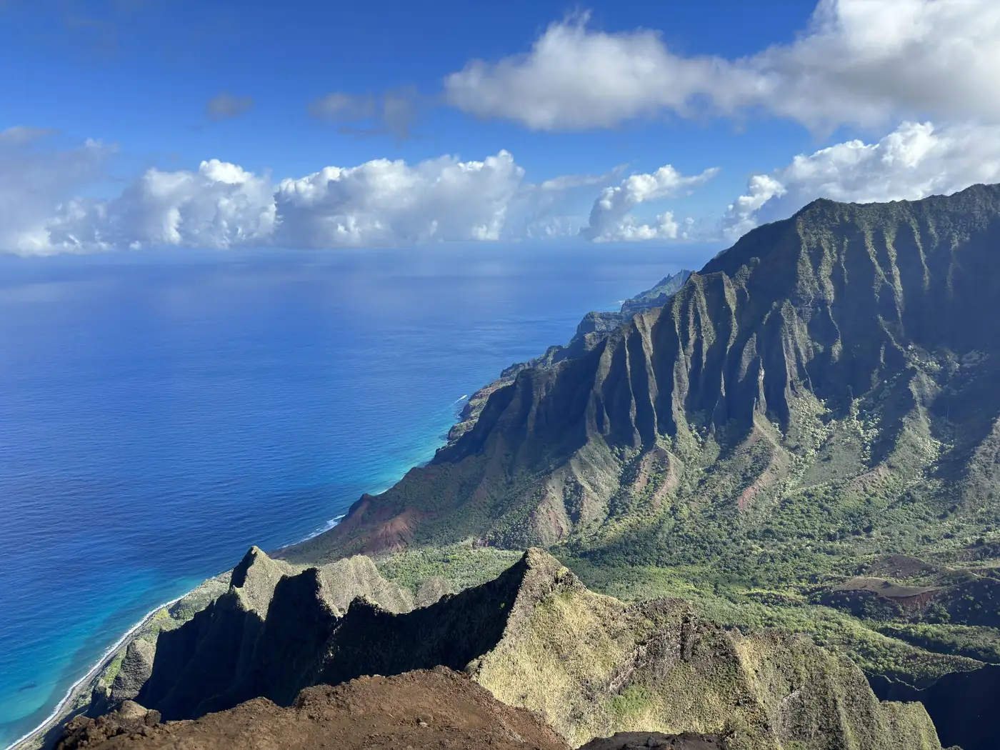

DESTINATION NOTES
Travel notes for people who notice the details.
Hotels, dining, places and local discoveries gathered through site visits, FAM trips and personal travel — with context about what is actually worth remembering.

Not another list of “top things to do.”
Rendezvous destination notes are built around place: the hotel that gets the details right, the dining room with a point of view, a neighbourhood worth slowing down for, or the local experience that gives a trip its texture.
The goal is useful context rather than generic travel content — what stood out, who a place may suit and which details are worth carrying into a future trip, retreat or event.
What the archive will cover.
- Hotels and property tours
- Restaurants and memorable dining
- Destination and neighbourhood notes
- Local makers and experiences
- Meeting and event spaces
- Ideas for retreats and group travel
As the archive grows, individual destination guides will connect these observations into deeper, searchable stories rather than one-off photo dumps.
Hospitality is the thread.
The travel side of RDV is intentionally connected to the event side. A great hotel can become a future retreat location. A restaurant can inspire a client dinner. A local tradition can shape a more memorable guest experience.
That cross-pollination is the point: gathering knowledge now so it becomes useful later.
START A RENDEZVOUS
Looking for a place, stay or starting point?
The RDV Archive will continue to grow with hotel, destination and dining notes. Follow the visual journal on Instagram for the newest discoveries.